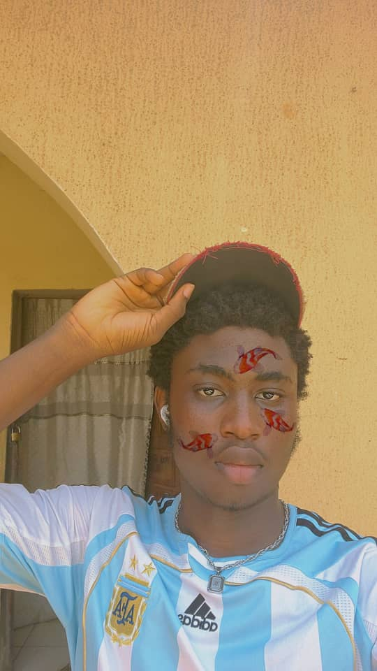
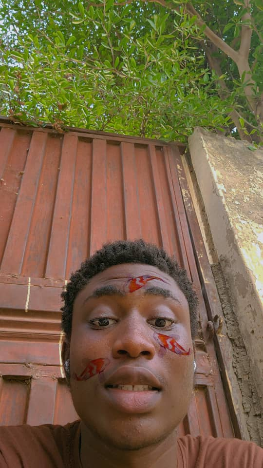
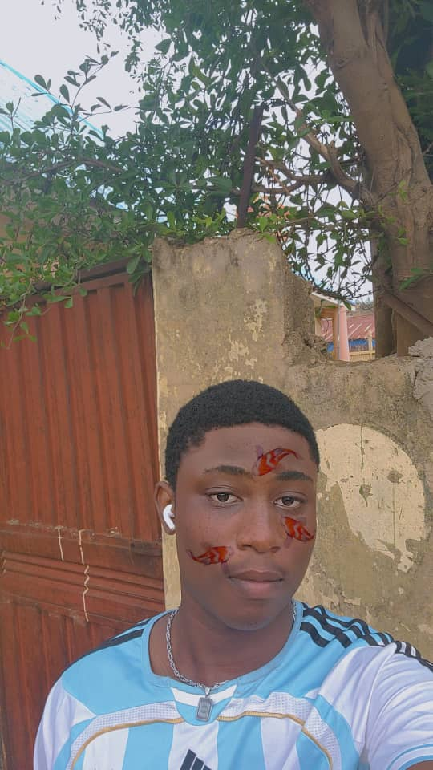

  
Joseph born on the 26th September 2006 in a hospital at the capital Lagos in those days is from benue state nigeria, and was brought up in osun state, is a 19 years old boy who looks to aquire and gain more kwnolwdge in the programming world.
Currently unknown
Schooled at FSTC Orozo, and is currently pursuing his next degree at the Nigerian-Korean Institute of Technology.